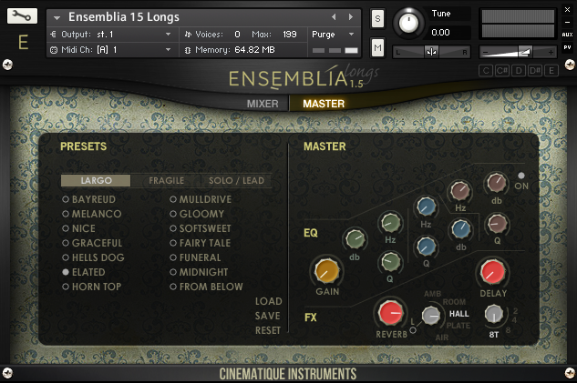
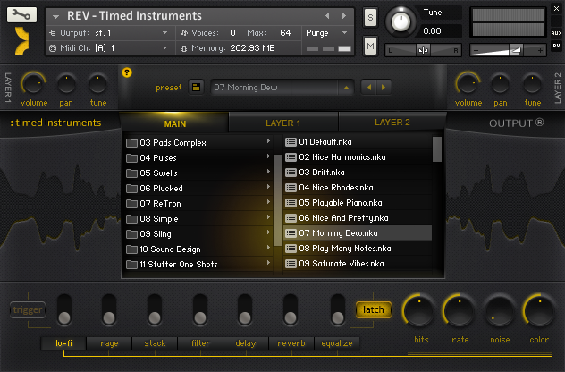

<?xml version="1.0" encoding="UTF-8"?><rss version="2.0"
	xmlns:content="http://purl.org/rss/1.0/modules/content/"
	xmlns:wfw="http://wellformedweb.org/CommentAPI/"
	xmlns:dc="http://purl.org/dc/elements/1.1/"
	xmlns:atom="http://www.w3.org/2005/Atom"
	xmlns:sy="http://purl.org/rss/1.0/modules/syndication/"
	xmlns:slash="http://purl.org/rss/1.0/modules/slash/"
	xmlns:itunes="http://www.itunes.com/dtds/podcast-1.0.dtd"
xmlns:rawvoice="http://www.rawvoice.com/rawvoiceRssModule/"
xmlns:googleplay="http://www.google.com/schemas/play-podcasts/1.0/play-podcasts.xsd"
>

<channel>
	<title>kontakt &#8211; SCOREcastOnline.com</title>
	<atom:link href="." rel="self" type="application/rss+xml" />
	<link>http://www.scorecastonline.com</link>
	<description>Global Community for the Professional Media Composer</description>
	<lastBuildDate>Mon, 19 Jun 2017 08:43:18 +0000</lastBuildDate>
	<language>en-US</language>
	<sy:updatePeriod>hourly</sy:updatePeriod>
	<sy:updateFrequency>1</sy:updateFrequency>
	<generator>https://wordpress.org/?v=4.8</generator>
<!-- podcast_generator="Blubrry PowerPress/7.0.4 beta" mode="advanced" feedslug="feed" -->
	<itunes:summary>Global Community for the Professional Media Composer</itunes:summary>
	<itunes:author>kontakt &#8211; SCOREcastOnline.com</itunes:author>
	<itunes:image href="../../../wp-content/plugins/powerpress/itunes_default.jpg" />
	<itunes:subtitle>Global Community for the Professional Media Composer</itunes:subtitle>
	<image>
		<title>kontakt &#8211; SCOREcastOnline.com</title>
		<url>../../../wp-content/uploads/powerpress/sig-SCO.jpg</url>
		<link>http://www.scorecastonline.com</link>
	</image>
<site xmlns="com-wordpress:feed-additions:1">29563098</site>	<item>
		<title>SCOREcast 058: Change is the Only Constant</title>
		<link>../../../2017/02/26/scorecast-058-change-is-the-only-constant/</link>
		<comments>../../../2017/02/26/scorecast-058-change-is-the-only-constant/#respond</comments>
		<pubDate>Sun, 26 Feb 2017 13:27:17 +0000</pubDate>
		<dc:creator><![CDATA[SCO Editorial Staff]]></dc:creator>
				<category><![CDATA[The SCOREcast Podcast Show]]></category>
		<category><![CDATA[academy awards]]></category>
		<category><![CDATA[business]]></category>
		<category><![CDATA[career]]></category>
		<category><![CDATA[community]]></category>
		<category><![CDATA[gear]]></category>
		<category><![CDATA[hans]]></category>
		<category><![CDATA[john williams]]></category>
		<category><![CDATA[kontakt]]></category>
		<category><![CDATA[NAMM]]></category>
		<category><![CDATA[oscars]]></category>
		<category><![CDATA[podcast show]]></category>
		<category><![CDATA[sample libraries]]></category>
		<category><![CDATA[star wars]]></category>
		<category><![CDATA[zimmer]]></category>

		<guid isPermaLink="false">../../../?p=2305</guid>
		<description><![CDATA[Oscar, Hans, John, and Mica… The boys are back with their first episode of 2017!]]></description>
				<content:encoded><![CDATA[<p><a class="spreaker-player" href="https://www.spreaker.com/user/deaneogden/scorecast-0058-change-is-the-only-consta" data-resource="episode_id=11169863" data-theme="light" data-autoplay="false" data-playlist="false" data-cover="https://d3wo5wojvuv7l.cloudfront.net/images.spreaker.com/original/020a56279cce1c97c8ed0779c3a426df.jpg" data-width="100%" data-height="400px">Listen to &#8220;SCOREcast 0058: Change is the Only Constant&#8221; on Spreaker.</a><script async src="https://widget.spreaker.com/widgets.js"></script></p>
<p>The SCOREcast boys are back with their first episode of 2017! It&#8217;s a full one, so buckle up as Deane and Brian talk through the NAMM Show, a fantastic new educational opportunity for composers, and the bizarre set of rules and regulations involving the Oscar-nomination process. Deane also makes public his announcement from last month&#8217;s SCOREcast <a href="../../../community" target="_blank">meetups in Hollywood and London</a> and what it means for our community going forward.</p>
<p>Be sure to head over to <a href="http://masterclass.com/scorecast" target="_blank">MasterClass</a> for your sneak peek into the brand new <a href="http://masterclass.com/scorecast" target="_blank">Hans Zimmer MasterClass</a> that is pre-enrolling now! For only $90, you can get the best seat in the world right next to Hans as he walks you through more than five hours of his writing and production process as well as his personal philosophy on the art and business of film scoring. Check it all out at <a href="http://masterclass.com/scorecast" target="_blank">MasterClass.com</a>.</p>
<h1>Where to Listen</h1>
<h3><a title="SCOREcast at iTunes" href="https://itunes.apple.com/us/podcast/the-scorecast-podcast-show/id683848476" target="_blank">iTunes</a></h3>
<h3><a title="SCOREcast at Stitcher Radio" href="http://app.stitcher.com/browse/feed/28885/episodes" target="_blank">Stitcher Radio<br />
</a></h3>
<p>&nbsp;</p>
<h1>Shownotes</h1>
<ol>
<li><a href="http://www.motu.com/products/software/dp" target="_blank">MOTU Digital Performer 9</a></li>
<li><a href="https://www.spectrasonics.net/products/keyscape/" target="_blank">Spectrasonics Keyscape</a></li>
<li><a href="http://tascam.com/product/dr-10x/" target="_blank">Tascam DR-10X</a></li>
<li><a href="https://www.spitfireaudio.com/" target="_blank">Spitfire sample libraries</a></li>
<li><a href="http://masterclass.com/scorecast" target="_blank">MasterClass.com &#8211; Hans Zimmer MasterClass</a></li>
<li><a href="http://screenrant.com/john-williams-star-wars-grammy/" target="_blank">John Williams wins his 5th <em>Star Wars</em> Grammy for <em>The Force Awakens</em> </a></li>
<li><a href="http://oscar.go.com/nominees" target="_blank">2017 Oscar-nominated scores</a></li>
</ol>
<h1>On-Air Questions</h1>
<p>Have a question, a comment, or a reaction to something from this episode? Send Deane and Brian an email at <a href="mailto:scorecastonline@gmail.com" target="_blank">scorecastonline@gmail.com</a>.</p>
<div>
<p>*<em>Note: By submitting your question via email, you are hereby granting SCOREcastOnline.com permission to re-broadcast/re-read your message on the air in a future episode of the SCOREcast Podcast Show. However, SCOREcastOnline.com makes no guarantee that your email message will be used in a broadcast.</em></p>
</div>
]]></content:encoded>
			<wfw:commentRss>../../../2017/02/26/scorecast-058-change-is-the-only-constant/feed/</wfw:commentRss>
		<slash:comments>0</slash:comments>
	<post-id xmlns="com-wordpress:feed-additions:1">2305</post-id>	</item>
		<item>
		<title>REVIEW: Marble by Cinematique Instruments</title>
		<link>../../../2016/03/30/marble/</link>
		<comments>../../../2016/03/30/marble/#respond</comments>
		<pubDate>Thu, 31 Mar 2016 06:28:59 +0000</pubDate>
		<dc:creator><![CDATA[Stellita Loukas]]></dc:creator>
				<category><![CDATA[Product reviews]]></category>
		<category><![CDATA[effects]]></category>
		<category><![CDATA[gear]]></category>
		<category><![CDATA[kontakt]]></category>
		<category><![CDATA[sound design]]></category>
		<category><![CDATA[strings]]></category>

		<guid isPermaLink="false">../../../?p=2280</guid>
		<description><![CDATA[For live and on-the-fly sound shaping that features well-recorded source material bundled with extensive effects options, Marble might be your new go-to tool.]]></description>
				<content:encoded><![CDATA[<p><strong>MARBLE</strong> by <a href="http://www.cinematique-instruments.com/page_marble.php" target="_blank">Cinematique Instruments</a><br />
<strong>240 €/ $270</strong></p>
<hr />
<p>&nbsp;</p>
<p>After releasing the <a href="../../../2016/01/11/ensemblia" target="_blank">Ensemblia</a> series last year, Germany-based developer <b><a href="http://cinematique-instruments.com/">Cinematique Instruments</a> </b>decided to switch gears and create a unique combination of their trademark traditional-meets-bizarre sounds with clever and innovative programming. The result was <strong>Marble</strong>.</p>
<div class="page" title="Page 1">
<div class="layoutArea">
<div class="column">
<p class="p1"><span class="s1">Marble is a KONTAKT-based library that runs on the full version of KONTAKT 5.3, comes with more than 800 presets, and is comprised of more than 2,500 samples.</span></p>
<h2>General Overview</h2>
<div class="page" title="Page 1">
<div class="layoutArea">
<div class="column">
<p class="p1"><span class="s1">At the core of <strong>Marble</strong> lie two parallel sound slots (called “Tracks”) equipped with their respective 16-step sequencers. But there is a twist; each of these two sequencers is completely ‘open’ &#8212; in other words, you can tweak every single one of the twelve parameters provided for each sound slot, individually for each of the 16 steps of the sequencer.</span></p>
<p class="p1"><span class="s1">One of the greatest values of this library is its flexibility and tweakability. Cinematique Instruments essentially provide us with a complex yet extremely intuitive and simple-to-use ‘system’ that allows us to combine any of the sixty-four sound sources in as many ways as our minds can imagine, sequence them and tweak each step of the sequence individually and, finally, manipulate everything in real time. </span></p>
<p class="p1"><span class="s1">The beauty of Marble lies at a single rotating ring that controls an entire effects matrix and which can allow you to shape your sound in real time. </span></p>
<p class="p1"><span class="s1"><b>THE GUI</b></span></p>
<p class="p1"><span class="s1">One of the first things I immediately loved about this library is the deceptively simple GUI. It is nicely designed and very neatly organized in a way that makes it easy to navigate. Everything is exactly where you expect it to be and you can create your own complex evolving sounds at the click of a button while being blissfully unaware of the complex mechanics and programming lying ‘behind the scenes’.  </span></p>
<p class="p1"><span class="s1">The entire <strong>Marble</strong> library is accessible via a single Kontakt-instrument patch that is organized into 4 tabs : </span></p>
<p class="p1"><span class="s1">1. The “PRESETS” tab allows you to choose any of the included 800 presets at the click of a button. Presets have been organized into categories and sub-categories that are sure to strike a cord with every modern composer, including Ambiences, Bass Lines, Sequences, Drum Beats, Rhythm Essentials and more.</span></p>
<p class="p1"><span class="s1">2. The “TRACKS” tab is where you can select a different sound source for each of the two “Tracks” and set the values for each of the two ‘open’ step sequencers. You can customize parameters such as velocity, note length, pan, tuning, shape, filter, LFO stutter, reverb, delay, time shifting and playing direction.</span></p>
<p class="p1"><span class="s1">3. The final sound/combination of the two tracks then passes through a complex effect matrix which you can customize and control in Real-Time through the “ASSIGN” tab. A 127-step sequencer allows you to easily assign parameter values for each of the onboard effects.</span></p>
<p class="p1"><span class="s1">4. Finally, the “MASTER” tab is where you can tweak your sound with a simple turning of the Marble ring (which is connected to the effects matrix at the “ASSIGN” tab), “Freeze” the sound if you wish to play along with the created sequence and set quantization and tempo parameters. </span></p>
<h2 class="p1">Malleability</h2>
<p class="p1">One thing Cinematique Instruments seems to have down really well is all the built-in ways you can mold and fashion their original sample sources into your own unique finished material sounds. With included sound sources such as drum kits, acoustic and electric basses, struck percussion, experimental string FX, woodwinds, classic synthesizers, skin percussions, glitch FX and electronic oddities galore, your possibilities are virtually endless. After you tweak to your heart&#8217;s delight, you can run the finished shape through <strong>Marble&#8217;s</strong> deep FX matrix. This process houses an extensive effects rack module, which includes low and high pass filters, face-ripping distortions, multi-band compression, randomizers, reverbs and more. By simply applying any one or combination of these parameters to your creation, Marble takes on a completely different vibe and enables you to throw your own voicings behind typically traditional instrument sources, making them perfect for video game music, trailer music production, film and TV work, or experimental media applications.</p>
<p class="p1">And…… all of this can happen in Real Time. If you are a live stage performer, this is a huge advantage that most sound libraries are slowly becoming hip to, but <strong>Marble</strong> gets exactly right directly out of the box. Every parameter is flexible on the fly and can be recorded with DAW automation for recall later on or real-time experimental performance – a major asset for the live player or experimental tweakhead composer.</p>
</div>
</div>
</div>
</div>
</div>
</div>
<div class="page" title="Page 4"></div>
<div class="page" title="Page 4">
<div class="layoutArea">
<div class="column">
<h2>Final Observations</h2>
</div>
</div>
</div>
<div class="page" title="Page 5">
<div class="layoutArea">
<div class="column">
<p class="p1"><span class="s1"><strong>Marble</strong> is a well-designed library that has clearly been created with a lot of forethought into how modern composers like to work and create. The sounds providing the raw material are top quality and have been recorded to Cinematique Instruments’ excellent standards. The ‘open’ 16-step sequencers offer a myriad of sonic possibilities and the fact that the effects matrix offers Real-Time dynamic sound shaping is, in my opinion, this library’s greatest asset. </span></p>
<p class="p1"><span class="s1"><strong>Marble</strong> is extremely playable and a lot of thought has evidently gone into creating a playable instrument that responds well to both chords and melodic lines, allowing users the freedom to create their own unique soundscapes via a simple and intuitive interface. </span></p>
<p class="p1"><span class="s1">Once again, Cinematique Instruments have created an excellent product that can easily find its way into any modern composer’s arsenal.</span></p>
<hr />
<p class="p1"><strong>MARBLE</strong> by <a href="http://www.cinematique-instruments.com/page_marble.php" target="_blank">Cinematique Instruments</a><br />
<strong>240 €/ $270</strong></p>
</div>
</div>
</div>
]]></content:encoded>
			<wfw:commentRss>../../../2016/03/30/marble/feed/</wfw:commentRss>
		<slash:comments>0</slash:comments>
	<post-id xmlns="com-wordpress:feed-additions:1">2280</post-id>	</item>
		<item>
		<title>REVIEW: Ensemblia by Cinematique Instruments</title>
		<link>../../../2016/01/11/ensemblia/</link>
		<comments>../../../2016/01/11/ensemblia/#respond</comments>
		<pubDate>Mon, 11 Jan 2016 23:16:36 +0000</pubDate>
		<dc:creator><![CDATA[Stellita Loukas]]></dc:creator>
				<category><![CDATA[Product reviews]]></category>
		<category><![CDATA[ethnic instruments]]></category>
		<category><![CDATA[gear]]></category>
		<category><![CDATA[kontakt]]></category>
		<category><![CDATA[orchestra]]></category>
		<category><![CDATA[sounds]]></category>
		<category><![CDATA[strings]]></category>

		<guid isPermaLink="false">../../../?p=2271</guid>
		<description><![CDATA[There are many libraries out there that do the ‘big’ sound incredibly well, but what happens when your cue demands a smaller, more intimate sound? Introducing… Ensemblia.]]></description>
				<content:encoded><![CDATA[<p><strong>ENSEMBLIA</strong> by <a href="http://cinematique-instruments.com/page_ensemblia15.php" target="_blank">Cinematique Instruments</a><br />
<strong>219 €/ $245</strong></p>
<p><strong>METALLIQUE</strong><br />
<strong>115 €/ $129</strong></p>
<p><strong>STRINGED</strong><br />
<strong>115 €/ $129</strong></p>
<hr />
<div class="page" title="Page 1">
<div class="layoutArea">
<div class="column">
<p><span class="s1"><a href="http://cinematique-instruments.com/"><b>Cinematique Instruments</b></a></span><span class="s2"> is a Germany-based developer of unique, odd and rare sample libraries. Comprising of a group of composers/producers, the Cinematique Instruments team is highly attuned to the needs of the modern composer and manages to continuously come up with unconventional yet highly usable libraries.</span></p>
<p class="p1"><span class="s2">Their latest flagship product, <a href="http://cinematique-instruments.com/page_ensemblia15.php" target="_blank">Ensemblia</a>, is a unique combination of traditional orchestral and rare modern instruments that is aiming to recreate the sound of the modern chamber orchestra and provide composers with an intuitive tool to create natural-sounding productions.</span></p>
<p class="p1"><span class="s2">Ensemblia is a KONTAKT-based library that runs on the full version of both KONTAKT 4 and 5 and has recently been updated to version 1.5, adding tons of new features and new instruments. What’s more, following the success of the original Ensemblia library, the Cinematique Instruments team is about to release two further variations, Metallique and Stringed. </span></p>
<p class="p1"><span class="s2">So let’s take a look at what this ‘trio’ can add to your arsenal!</span></p>
<h2>General Overview</h2>
<div class="page" title="Page 1">
<div class="layoutArea">
<div class="column">
<p class="p1"><span class="s1">The original library comes with a wealth of sonic colors, from classical orchestral and mallet instruments to odd synths and bowed guitars. But the real beauty of Ensemblia, where all sounds come truly alive, is in the clever Kontakt patch programming. </span></p>
<p class="p1"><span class="s1">The entire library is organized in just two patches: Longs and Shorts. The large variety of presets available are accessed via the well thought-out user interface. </span></p>
<p class="p1"><span class="s1"><b>Longs</b></span></p>
<p class="p1"><span class="s1">The Longs patch allows you to load up to 7 different instruments, each on a dedicated channel strip that gives you individual control over the volume, panning, reverb, and transposition. The magic, however, lies in the Voicing section where you can determine how each chord you play on the keyboard is distributed to the loaded instruments. For example, you can load all four orchestral strings, each on its individual slot, and instruct Ensemblia to assign the lowest note of your chords to the bass, the highest to the violin and the middle ones to the viola and cello.</span></p>
<p class="p1"><span class="s1">As if this isn’t clever enough, the &#8216;Longs&#8217; patch has been programmed in such a way so as to automatically recognize where to assign each new note you play, based on its distance from the previous notes. If, for example, you have a Csus4 chord and the F is assigned to the viola, when you move to a C triad, the E will automatically be played by the viola, too!</span></p>
<p class="p1"><span class="s1">While you are free to mix and match the available instruments to your heart’s delight, the CI team has provided a wealth of presets neatly organized into intuitive categories, to suit all tastes.</span></p>
<p class="p1"></p>
<p class="p1"><span class="s1"><b>Shorts</b></span></p>
<p class="p1"><span class="s1">The Shorts patch is excellent for rhythmic figures and ostinato and works in the exact same way (7 instrument slots with individual controls) but it also features an “Arranger” page that allows you to program the exact rhythm each instrument is playing. The presets provided are again well thought-out and neatly organized and can give you anything from dark and frantic to light and atmospheric. </span></p>
<p class="p1"><span class="s1">In both patches, a comprehensive “Mixer” section allows you to shape your sound to taste and make it as subtle or as overpowering as you wish!</span></p>
<p class="p1"></p>
</div>
</div>
</div>
</div>
</div>
</div>
<div class="page" title="Page 1">
<div class="layoutArea">
<div class="column">
<p>&nbsp;</p>
<h2>Ensemblia &#8220;<span class="s1"><b>Metallique&#8221;</b></span></h2>
</div>
</div>
</div>
<div class="page" title="Page 4">
<div class="layoutArea">
<div class="column">
<p class="p1"><span class="s1">Based on the same principles as the original Ensemblia library, Ensemblia Metallique comprises of a large range of metallic mallet instruments (anything and everything from vibraphone to a salad bowl!), all accessible via a “Shorts” patch which allows you to mix and match instruments, program your own rhythms and further shape your sound via the Mixer section.</span></p>
<p class="p1"></p>
<h2 class="p1">Ensemblia &#8220;Stringed&#8221;</h2>
<p class="p1"><span class="s1">The Stringed variation of Ensemblia brings together all the rare and odd string instruments the CI team has ever recorded: autoharp, monochord, kantele, lute, hammered dulcimer, zither and many more. Since these are mostly plucked instruments, Ensemblia Stringed comprises of just the “Shorts” patch, but this is enough to satisfy even the most demanding tastes.</span></p>
<p class="p1"></p>
<p class="p3">
</div>
</div>
</div>
<div class="page" title="Page 4">
<div class="layoutArea">
<div class="column">
<h2></h2>
<h2>Final Observations</h2>
</div>
</div>
</div>
<div class="page" title="Page 5">
<div class="layoutArea">
<div class="column">
<p class="p1"><span class="s1">There is an unwritten rule-of-thumb that the smaller the ensemble you are composing/orchestrating for the more careful you have to be when choosing voicings, voice leading, doublings, etc. This is one of the reasons why it is said that writing for a string quartet, for example, is much harder than writing for a full string orchestra. </span></p>
<p class="p1"><span class="s1">The same is true for sample libraries — large and ‘epic’ ensembles are often easier to make sound realistic but small and intimate are harder. There are many libraries out there that do the ‘big’ sound incredibly well, but what happens when your cue demands a smaller, more intimate sound? </span></p>
<p class="p1"><span class="s1">This is where Ensemblia excels. It is a library that has clearly been designed with the modern composer in mind. It comes to fill a ‘void’ in the sample library market and it does so incredibly well. Ensemblia offers a large variety of sonic possibilities in an extremely well recorded and programmed package. Added with its beautiful interface, and you have an easy to find your way around the library and create the exact sound you are after. </span></p>
</div>
</div>
</div>
<hr />
<p><strong>ENSEMBLIA</strong> by <a href="http://cinematique-instruments.com/page_ensemblia15.php" target="_blank">Cinematique Instruments</a><br />
<strong>219 €/ $245</strong></p>
<p><strong>METALLIQUE</strong><br />
<strong>115 €/ $129</strong></p>
<p><strong>STRINGED</strong><br />
<strong>115 €/ $129</strong></p>
]]></content:encoded>
			<wfw:commentRss>../../../2016/01/11/ensemblia/feed/</wfw:commentRss>
		<slash:comments>0</slash:comments>
	<post-id xmlns="com-wordpress:feed-additions:1">2271</post-id>	</item>
		<item>
		<title>SPOTLIGHT ON: Output&#8217;s SIGNAL</title>
		<link>../../../2015/09/14/spotlight-on-output-signal/</link>
		<comments>../../../2015/09/14/spotlight-on-output-signal/#respond</comments>
		<pubDate>Mon, 14 Sep 2015 23:42:36 +0000</pubDate>
		<dc:creator><![CDATA[Eanan Patterson]]></dc:creator>
				<category><![CDATA[Spotlight ON]]></category>
		<category><![CDATA[design]]></category>
		<category><![CDATA[gear]]></category>
		<category><![CDATA[kontakt]]></category>
		<category><![CDATA[library]]></category>
		<category><![CDATA[pulse]]></category>
		<category><![CDATA[sample]]></category>
		<category><![CDATA[sound]]></category>

		<guid isPermaLink="false">../../../?p=2250</guid>
		<description><![CDATA[In this episode of SPOTLIGHT ON edition, Éanán and Stellita take a comprehensive journey through the inner workings of Output's new pulsating monster - SIGNAL.]]></description>
				<content:encoded><![CDATA[<p>In this brand new edition of SCOREcast&#8217;s SPOTLIGHT ON, Éanán Paterson and Stellita Loukas bring you along on a deep dive through Output&#8217;s newest flagship product SIGNAL — a beast of a library driven by two independent pulse engines — that will breathe new life and glorious color into your music.</p>
<p>For more information and to purchase, please visit the <a href="http://outputsounds.com/products/signal/" target="_blank">OUTPUT</a> website.</p>
<p>If you cannot see the video below, please click <a href="https://youtu.be/qgET9k49_cw" target="_blank">here</a>.</p>
<p><iframe src="//www.youtube.com/embed/qgET9k49_cw" width="560" height="315" frameborder="0" allowfullscreen="allowfullscreen"></iframe></p>
]]></content:encoded>
			<wfw:commentRss>../../../2015/09/14/spotlight-on-output-signal/feed/</wfw:commentRss>
		<slash:comments>0</slash:comments>
	<post-id xmlns="com-wordpress:feed-additions:1">2250</post-id>	</item>
		<item>
		<title>SCO &#8220;Betweenisode&#8221;: Sonokinetic&#8217;s &#8220;Tutti Vox&#8221;</title>
		<link>../../../2015/07/02/sco-betweenisode-sonokinetics-tutti-vox/</link>
		<comments>../../../2015/07/02/sco-betweenisode-sonokinetics-tutti-vox/#respond</comments>
		<pubDate>Thu, 02 Jul 2015 09:47:54 +0000</pubDate>
		<dc:creator><![CDATA[SCO Editorial Staff]]></dc:creator>
				<category><![CDATA[The SCOREcast Podcast Show]]></category>
		<category><![CDATA[gear]]></category>
		<category><![CDATA[gear spotlight]]></category>
		<category><![CDATA[kontakt]]></category>
		<category><![CDATA[podcast show]]></category>
		<category><![CDATA[sample libraries]]></category>
		<category><![CDATA[studio]]></category>

		<guid isPermaLink="false">../../../?p=2242</guid>
		<description><![CDATA[Deane chats with the Sonokinetic crew about their brand new cinematic choir sample library, TUTTI VOX.]]></description>
				<content:encoded><![CDATA[<p><center><iframe style="border: none;" src="//html5-player.libsyn.com/embed/episode/id/3650518/height/320/width/684/theme/standard/direction/no/autoplay/no/autonext/no/thumbnail/yes/preload/no/no_addthis/no/" width="684" height="320" scrolling="no" allowfullscreen="allowfullscreen"></iframe></center>In this SCOREcast &#8220;betweenisode&#8221;, Deane Ogden hangs out with Son Thomsen, Rob van den Berg, and Ken Black of Sonokinetic, to talk about their newest monster, TUTTI VOX. Hurry over to <a href="http://sonokinetic.net" target="_blank">Sonokinetic.net</a> to take advantage of introductory discount pricing on the TUTTI VOX cinematic choir and to check out extensive walkthrough videos on the product.</p>
<h1>Where to Listen</h1>
<h3><a title="SCOREcast at iTunes" href="https://itunes.apple.com/us/podcast/the-scorecast-podcast-show/id683848476" target="_blank">iTunes</a></h3>
<h3><a title="SCOREcast at Stitcher Radio" href="http://app.stitcher.com/browse/feed/28885/episodes" target="_blank">Stitcher Radio</a></h3>
<h1></h1>
<h1>Shownotes/Mentions</h1>
<ol>
<li><a href="http://sonokinetic.net" target="_blank">Sonokinetic.com</a> // TUTTI VOX</li>
</ol>
<h1></h1>
<h1>On-Air Questions</h1>
<p>Have a question or a comment you&#8217;d like addressed on-air? Send Deane and Brian an email at <a href="mailto:scorecastonline@gmail.com" target="_blank">scorecastonline@gmail.com</a>.</p>
<div>
<p>*<em>Note: By submitting your question via email, you are hereby granting SCOREcastOnline.com permission to re-broadcast/re-read your message on the air in a future episode of the SCOREcast Podcast Show. However, SCOREcastOnline.com makes no guarantee that your email message will be used in a broadcast.</em></p>
</div>
]]></content:encoded>
			<wfw:commentRss>../../../2015/07/02/sco-betweenisode-sonokinetics-tutti-vox/feed/</wfw:commentRss>
		<slash:comments>0</slash:comments>
	<post-id xmlns="com-wordpress:feed-additions:1">2242</post-id>	</item>
		<item>
		<title>SCO &#8220;Betweenisode&#8221;: Inside Heavyocity</title>
		<link>../../../2015/06/19/sco-betweenisode-inside-heavyocity/</link>
		<comments>../../../2015/06/19/sco-betweenisode-inside-heavyocity/#respond</comments>
		<pubDate>Sat, 20 Jun 2015 06:49:31 +0000</pubDate>
		<dc:creator><![CDATA[SCO Editorial Staff]]></dc:creator>
				<category><![CDATA[The SCOREcast Podcast Show]]></category>
		<category><![CDATA[gear]]></category>
		<category><![CDATA[gear spotlight]]></category>
		<category><![CDATA[kontakt]]></category>
		<category><![CDATA[podcast show]]></category>
		<category><![CDATA[sample libraries]]></category>
		<category><![CDATA[studio]]></category>

		<guid isPermaLink="false">../../../?p=2239</guid>
		<description><![CDATA[Deane chats with Neil Goldberg of Heavyocity, makers of the new sample library GRAVITY.]]></description>
				<content:encoded><![CDATA[<p><center><iframe style="border: none;" src="//html5-player.libsyn.com/embed/episode/id/3626294/height/320/width/684/theme/standard/direction/no/autoplay/no/autonext/no/thumbnail/yes/preload/no/no_addthis/no/" width="684" height="320" scrolling="no" allowfullscreen="allowfullscreen"></iframe></center>In this &#8220;betweenisode&#8221; of the SCOREcast Podcast Show, Deane Ogden chats with Neil Goldberg of Heavyocity, makers of the new sample library GRAVITY, and gets a peek under the hood of their company and products. Visit <a href="http://www.heavyocity.com/" target="_blank">Heavyocity.com</a> for a special discount off GRAVITY until June 26, 2015.</p>
<h1>Where to Listen</h1>
<h3><a title="SCOREcast at iTunes" href="https://itunes.apple.com/us/podcast/the-scorecast-podcast-show/id683848476" target="_blank">iTunes</a></h3>
<h3><a title="SCOREcast at Stitcher Radio" href="http://app.stitcher.com/browse/feed/28885/episodes" target="_blank">Stitcher Radio</a></h3>
<h1></h1>
<h1>Shownotes/Mentions</h1>
<ol>
<li><a href="http://heavyocity.com" target="_blank">Heavyocity.com</a> // GRAVITY</li>
</ol>
<h1></h1>
<h1>On-Air Questions</h1>
<p>Have a question or a comment you&#8217;d like addressed on-air? Send Deane and Brian an email at <a href="mailto:scorecastonline@gmail.com" target="_blank">scorecastonline@gmail.com</a>.</p>
<div>
<p>*<em>Note: By submitting your question via email, you are hereby granting SCOREcastOnline.com permission to re-broadcast/re-read your message on the air in a future episode of the SCOREcast Podcast Show. However, SCOREcastOnline.com makes no guarantee that your email message will be used in a broadcast.</em></p>
</div>
]]></content:encoded>
			<wfw:commentRss>../../../2015/06/19/sco-betweenisode-inside-heavyocity/feed/</wfw:commentRss>
		<slash:comments>0</slash:comments>
	<post-id xmlns="com-wordpress:feed-additions:1">2239</post-id>	</item>
		<item>
		<title>SCOREcast 051: Ask Us Anything</title>
		<link>../../../2015/05/27/scorecast-051-ask-us-anything/</link>
		<comments>../../../2015/05/27/scorecast-051-ask-us-anything/#respond</comments>
		<pubDate>Wed, 27 May 2015 17:20:48 +0000</pubDate>
		<dc:creator><![CDATA[SCO Editorial Staff]]></dc:creator>
				<category><![CDATA[The SCOREcast Podcast Show]]></category>
		<category><![CDATA[career]]></category>
		<category><![CDATA[collaboration]]></category>
		<category><![CDATA[kontakt]]></category>
		<category><![CDATA[news]]></category>
		<category><![CDATA[organization]]></category>
		<category><![CDATA[philosophy]]></category>
		<category><![CDATA[podcast show]]></category>
		<category><![CDATA[sample libraries]]></category>
		<category><![CDATA[workflow]]></category>

		<guid isPermaLink="false">../../../?p=2236</guid>
		<description><![CDATA[You asked. We answered. As many listener questions as we could get through in 90 minutes.]]></description>
				<content:encoded><![CDATA[<p><iframe src="https://widget.spreaker.com/player?episode_id=8919299&#038;theme=light&#038;playlist=false&#038;playlist-continuous=false&#038;autoplay=false&#038;live-autoplay=false&#038;chapters-image=true" width="100%" height="200px" frameborder="0"></iframe></p>
<p>On our 51st episode of the SCOREcast Podcast Show, Deane and Brian open up the floodgates of questions from SCOREcasters all over the world to talk through as many film scoring topics as they can in 90 minutes. Deane also sits down with the <a href="http://outputsounds.com" target="_blank">Output</a> team, makers of the new SIGNAL Kontakt library, to chat about the genesis of the product and its highly popular predecessor, REV.</p>
<h1>Where to Listen</h1>
<h3><a title="SCOREcast at iTunes" href="https://itunes.apple.com/us/podcast/the-scorecast-podcast-show/id683848476" target="_blank">iTunes</a></h3>
<h3><a title="SCOREcast at Stitcher Radio" href="http://app.stitcher.com/browse/feed/28885/episodes" target="_blank">Stitcher Radio</a></h3>
<h1>Shownotes/Mentions</h1>
<ol>
<li><a title="Output" href="http://outputsounds.com" target="_blank">Outputsounds.com</a> // SIGNAL</li>
</ol>
<h1>On-Air Questions</h1>
<p>Have a question or a comment you&#8217;d like addressed on-air? Send Deane and Brian an email at <a href="mailto:scorecastonline@gmail.com" target="_blank">scorecastonline@gmail.com</a>.</p>
<div>
<p>*<em>Note: By submitting your question via email, you are hereby granting SCOREcastOnline.com permission to re-broadcast/re-read your message on the air in a future episode of the SCOREcast Podcast Show. However, SCOREcastOnline.com makes no guarantee that your email message will be used in a broadcast.</em></p>
</div>
]]></content:encoded>
			<wfw:commentRss>../../../2015/05/27/scorecast-051-ask-us-anything/feed/</wfw:commentRss>
		<slash:comments>0</slash:comments>
	<post-id xmlns="com-wordpress:feed-additions:1">2236</post-id>	</item>
		<item>
		<title>REVIEW: SIGNAL Pulse Engine by Output</title>
		<link>../../../2015/04/01/review-signal-by-output/</link>
		<comments>../../../2015/04/01/review-signal-by-output/#respond</comments>
		<pubDate>Wed, 01 Apr 2015 09:30:40 +0000</pubDate>
		<dc:creator><![CDATA[Ryan Scully]]></dc:creator>
				<category><![CDATA[Product reviews]]></category>
		<category><![CDATA[gear]]></category>
		<category><![CDATA[kontakt]]></category>
		<category><![CDATA[library]]></category>
		<category><![CDATA[sample libraries]]></category>

		<guid isPermaLink="false">../../../?p=2228</guid>
		<description><![CDATA[Output's SIGNAL combines the warmth of analog and aggressive synthesis with an immense collection of organic, sampled instruments… and blows the roof off yet another genre.]]></description>
				<content:encoded><![CDATA[<p><strong>SIGNAL</strong> Pulse Engine by Output<br />
<strong>$199.00</strong> (SIGNAL); <strong>$348.00</strong> (SIGNAL + REV Bundle, save $50)<strong><br />
</strong>Purchase SIGNAL and get more information at <a href="http://outputsounds.com/products/signal/" target="_blank">Outputsounds.com</a></p>
<hr />
<div class="page" title="Page 1">
<div class="layoutArea">
<div class="column">
<p><a href="http://outputsounds.com"></a></p>
<p class="p1"><span class="s1"><a href="http://outputsounds.com" target="_blank">Output</a> first came on the sample library scene nearly a year and a half ago with their groundbreaking and highly acclaimed release REV (<a title="REVIEW: REV by Output" href="../../../2013/11/20/review-rev-by-output" target="_blank">SCOREcast review here</a>). The library was so forward thinking with such an unorthodox concept that many have wondered how they could possibly follow up that release.</span></p>
<p class="p1"><span class="s1">The answer comes in the form of their brand new pulse-driven sample library: <b>SIGNAL</b>.</span></p>
<p class="p1"><span class="s1">SIGNAL<b> </b>combines the warmth of analog and aggressive synthesis with an immense collection of organic, sampled instruments, but the true lure of the library rests with the inclusion of its “Pulse Engine”, which allows for up to four independent, tempo-locking rhythms across two separate sound source layers to create that “heartbeat” at the center of your track.</span></p>
<p class="p1"><span class="s1">We will take a detailed look at the library from the ground up to see what’s included, how it operates and ultimately what it will add to your existing sample library arsenal.</span></p>
<h2>General Overview</h2>
<div class="page" title="Page 1">
<div class="layoutArea">
<div class="column">
<p class="p1"><span class="s1">SIGNAL<b> </b>requires Kontakt 5.3.1 or higher and is compatible with the Kontakt Free Player. The library is immense, weighing in at around 40GB. Output utilizes the <a title="Continuata Utility" href="http://www.continuata.com/" target="_blank">Continuata Connect Download Utility</a> and I personally had a smooth and swift download of the content.<span class="Apple-converted-space">  </span>The library will need to be activated within the Native Instruments Service Center before it will become available within the library pane of your Kontakt browser.</span></p>
<p class="p1"><span class="s1">Before unpacking this beast, let&#8217;s look at a quick listing of everything included in the library as well as its features:</span></p>
<ul>
<li class="p1">500 Pulse Instruments for instant playability</li>
<li class="p1">40GB of content, including analog synths, digital synths and organic instruments</li>
<li class="p1">Up to four separate pulses at one time</li>
<li class="p1">All pulses lock to tempo</li>
<li class="p1">Rhythms: Looper, Step Sequencers, Arpeggiators, LFO’s</li>
<li class="p1">Four central MACRO sliders unique to each of the 500 Pulse Instruments</li>
<li class="p1">Effects can control global parameters and individual layers</li>
<li class="p1">Convolution reverb engine</li>
<li class="p1">Advanced mode for access to all parameters</li>
<li class="p1">Copy and paste settings between layers</li>
<li class="p1">Smart tagging preset menu</li>
<li class="p1">Simple design and ease of use</li>
</ul>
</div>
</div>
</div>
</div>
</div>
</div>
<h2>The Preset Browser</h2>
<div class="page" title="Page 1">
<div class="layoutArea">
<div class="column">
<div id="attachment_2231" style="width: 399px" class="wp-caption alignleft"><a href="http://outputsounds.com"></a><p class="wp-caption-text">Preset Browser</p></div>
<p class="p1"><span class="s1">SIGNAL<b> </b>contains just one patch in the instruments folder by which all the contents of the library can be accessed, which I think it is a brilliant layout. The developer recommends (and I agree) that you access the “preset” browser page first when initially diving into the library. This can be accessed by simply clicking on any preset name (e.g. &#8220;Dark Clacks&#8221;, pictured above) from the main page. The browser is laid out in a familiar, yet very welcomed format; simply click on one (or many) of the “smart tags” in the left-side palette and the right window pane will provide a listing of compatible instruments, based on your choices.</span></p>
<p class="p1"><span class="s1">There are five hundred — That&#8217;s right… 500! — different instruments in SIGNAL<b> </b>and<b> </b>I couldn’t have asked for a better way to audition them than the way this browser is constructed.</span></p>
<p class="p1"><span class="s1">So how does it sound on a first play through?<span class="Apple-converted-space">  </span>I clicked on “Epic” and “Organic” and chose the patch “Sun King” from the browser – I played a three-note D minor triad and heard a deep, gritty, pulsating arpeggiated figure with two intersecting polyrhythms. Awesome. I proceeded to get lost over the next hour sampling various different instruments from the browser and the immediate attention to the production value and execution of the patches were very impressive.</span></p>
<p><center><iframe src="//www.youtube.com/embed/_Htvz6KwHjQ" width="560" height="315" frameborder="0" allowfullscreen="allowfullscreen"></iframe></center></p>
<p class="p1"><span class="s1">Let’s move over to the “Pulse Engines” page to get under the hood and see what SIGNAL reveals…</span></p>
</div>
</div>
</div>
<h2>The Pulse Engines</h2>
<div class="page" title="Page 2">
<div class="layoutArea">
<div class="column">
<div id="attachment_2233" style="width: 399px" class="wp-caption alignright"><a href="http://outputsounds.com"></a><p class="wp-caption-text">Pulse Engines</p></div>
<p class="p1"><span class="s1">The true heart of SIGNAL rests within its “Pulse Engines” page. At first glance the layout may seem daunting and complex, but Output has made the source audio flow so intuitively that you’ll want to dig deeper and deeper at the sounds and the engine’s capability.</span></p>
<p class="p1"><span class="s1">SIGNAL<b> </b>gives you two separate sound sources that can be loaded and played in unison. Simply clicking on the “Signal Pulse Engines” window in the middle of the page will disable the pulse engine, leaving just the sound sources by themselves. Each sound source has it’s own channel strip  and when you click on the instrument picture/name it will open the sound source browser. There is an immense collection of synths and organic instruments in the browser that can be quickly loaded into the existing patch. This is a fantastic addition as you can quickly tryout new sounds in your loaded instrument that may mesh even better to your ears than before. Don’t want the “Sub Sine”? Why not load up a deep sampled “Muted Guitar” and see how that sounds? The possibilities are endless. </span></p>
<p class="p1"><span class="s1"> Let’s focus on <em>Pulse Engine A</em> for now (<em>Pulse Engine B</em> has all the functionality identical to Pulse Engine A). You will see a tab of “Main Rhythm” and “2</span><span class="s2"><sup>nd</sup></span><span class="s1"> Rhythm”, each able to be activated or deactivated by clicking the corresponding power switch. The “Main Rhythm” is the first engine your source audio will pass through and you have multiple options to create that “pulse” from the audio. SIGNAL<b> </b>gives you access to a Wave Form (LFO), Step Sequencer, Arpeggiator or a Loop mechanism (see picture above under Engine B) to modulate the audio signal. Regardless of which option you choose, you can manipulate the time format via bars, standard signatures (1/2, 1/4, 1/16, etc.), and dotted or triplet subdivisions.</span></p>
<p class="p1"><span class="s1">The “2</span><span class="s2"><sup>nd</sup></span><span class="s1"> Rhythm” will take the carrier signal through an additional rhythmic manipulation, available to you via LFO or Step Sequencer. The level of control and audio quality of all these parameters is stunning, making it simple to create highly useable and complex rhythmic figures on the fly.</span></p>
<p class="p1"><span class="s1">As mentioned, all this can be done with Pulse Engine B as well, but with a completely separate (or same) audio source.<span class="Apple-converted-space"> SIGNAL</span> also makes it very easy for you to copy/paste one rhythm in Pulse Engine A to Pulse Engine B through an elegant transfer window. </span></p>
<div id="attachment_2232" style="width: 399px" class="wp-caption alignleft"><a href="http://outputsounds.com"></a><p class="wp-caption-text">Macro Sliders</p></div>
<p class="p3"><span class="s1">The four available macro sliders are perhaps the most flexible and intuitive feature in SIGNAL. Output meticulously crafted these macros so they are completely unique to each of the 500 instruments found in the library. I immediately assigned each macro slider to an available slider on my MIDI controller. The macros can make the sound modulate from subtle to drastic just from the flick of the slider. For instance, you can distort, widen, open/close filters, blend layers or completely change one of the four available rhythms on the fly. Moving around all four macros at the same time pull out instant inspiration and promote these patches for live performance.<span class="Apple-converted-space"> </span>There is a Macro Page from the instrument menu that will allow you too see which particular instrument parameters are being controlled by the sliders and these can be further adjusted as well.</span></p>
</div>
</div>
</div>
<p class="p1"><span class="s1">Want to go even deeper with the sounds? You can quickly access the “Advanced Tab” from the Pulse Engines page or the the “Effects” page for even further tweaking. All effects can be applied globally or individually between Pulse Engine A or Pulse Engine B.</span></p>
<div id="attachment_2234" style="width: 630px" class="wp-caption aligncenter"><a href="http://outputsounds.com"></a><p class="wp-caption-text">Effects page</p></div>
<div class="page" title="Page 4">
<div class="layoutArea">
<div class="column">
<h2></h2>
<h2>Final Observations</h2>
</div>
</div>
</div>
<div class="page" title="Page 5">
<div class="layoutArea">
<div class="column">
<p class="p1"><span class="s1">I am just gonna come right out and say it: <b>SIGNAL </b>is flat out brilliant! <a title="Output" href="http://outputsounds.com/products/signal/" target="_blank">Output</a> has once again created an intuitive and inspirational composing tool of the highest production standard. The immediate application and immense depth to SIGNAL’s instruments will keep this library as fresh many years from now as it was the day you bought it.</span></p>
</div>
</div>
</div>
<hr />
<p><strong>SIGNAL</strong> Pulse Engine by Output<br />
<strong>$199.00</strong> (SIGNAL); <strong>$348.00</strong> (SIGNAL + REV Bundle, save $50)<strong><br />
</strong>Purchase SIGNAL and get more information at <a href="http://outputsounds.com/products/signal/" target="_blank">Outputsounds.com</a></p>
]]></content:encoded>
			<wfw:commentRss>../../../2015/04/01/review-signal-by-output/feed/</wfw:commentRss>
		<slash:comments>0</slash:comments>
	<post-id xmlns="com-wordpress:feed-additions:1">2228</post-id>	</item>
		<item>
		<title>SCOREcast 050: LIVE&#8230; from the 9th Annual SCOREcast NAMM Dinner</title>
		<link>../../../2015/03/24/scorecast-050-live-from-the-9th-annual-scorecast-namm-dinner/</link>
		<comments>../../../2015/03/24/scorecast-050-live-from-the-9th-annual-scorecast-namm-dinner/#respond</comments>
		<pubDate>Tue, 24 Mar 2015 12:24:03 +0000</pubDate>
		<dc:creator><![CDATA[SCO Editorial Staff]]></dc:creator>
				<category><![CDATA[The SCOREcast Podcast Show]]></category>
		<category><![CDATA[gear]]></category>
		<category><![CDATA[kontakt]]></category>
		<category><![CDATA[NAMM]]></category>
		<category><![CDATA[podcast show]]></category>
		<category><![CDATA[sample libraries]]></category>

		<guid isPermaLink="false">../../../?p=2223</guid>
		<description><![CDATA[For the milestone of our 50th show, the boys host the 9th Annual SCOREcast NAMM Dinner in Los Angeles.]]></description>
				<content:encoded><![CDATA[<p><iframe src="https://widget.spreaker.com/player?episode_id=8919301&#038;theme=light&#038;playlist=false&#038;playlist-continuous=false&#038;autoplay=false&#038;live-autoplay=false&#038;chapters-image=true" width="100%" height="200px" frameborder="0"></iframe></p>
<p>Fifty episodes, hundreds of topics, more than seventy hours of recorded conversation… but until now, Deane and Brian have never ventured out into the wild of a live SCOREcast event and recorded an episode. For the milestone of our 50th show, the boys host the SCOREcast NAMM Dinner in Anaheim, California – an annual event that draws dozens of composers, orchestrators, developers, performers and fans – and finally chat with the developer of ERA 2: Medieval Legends, <a href="http://www.samplelibraries.com/" target="_blank">Eduardo Tarilonte</a>; president of <a href="http://www.bestservice.de/en" target="_blank">Best Service</a>, Wolfgang Wanko; Mike Peaslee, Gregg Stephens and Chris Marshall of <a href="http://soundiron.com/" target="_blank">SoundIron</a>; cinematic vocalists <a href="http://www.uyangamusic.com/" target="_blank">Uyanga Bold</a> and <a href="http://www.aeraliebrighton.com/" target="_blank">Aeralie Brighton</a>; and Sam Estes and Michael Hobe of <a href="http://sonicsmiths.com/" target="_blank">SonicSmiths</a>. It&#8217;s a loud, margarita-fueled night, and a detailed insight into the business of creating the sample libraries that we all use on a daily basis. It&#8217;s the 50th episode of the SCOREcast Podcast Show!</p>
<h1>Where to Listen</h1>
<h3><a title="SCOREcast at iTunes" href="https://itunes.apple.com/us/podcast/the-scorecast-podcast-show/id683848476" target="_blank">iTunes</a></h3>
<h3><a title="SCOREcast at Stitcher Radio" href="http://app.stitcher.com/browse/feed/28885/episodes" target="_blank">Stitcher Radio</a></h3>
<h1>Shownotes/Mentions</h1>
<ol>
<li><a href="http://www.samplelibraries.com/" target="_blank">Eduardo Tarilonte</a> // ERA 2: Medieval Legends</li>
<li><a href="http://www.bestservice.de/en" target="_blank">Best Service</a></li>
<li><a href="http://soundiron.com/" target="_blank">SoundIron Sampling</a></li>
<li><a href="http://www.uyangamusic.com/" target="_blank">Uyanga Bold</a></li>
<li><a href="http://www.aeraliebrighton.com/" target="_blank">Aeralie Brighton</a></li>
<li><a href="http://sonicsmiths.com/" target="_blank">Sonicsmiths</a></li>
</ol>
<h1>On-Air Questions</h1>
<p>Have a question or a comment you&#8217;d like addressed on-air? Send Deane and Brian an email at <a href="mailto:scorecastonline@gmail.com" target="_blank">scorecastonline@gmail.com</a>.</p>
<div>
<p>*<em>Note: By submitting your question via email, you are hereby granting SCOREcastOnline.com permission to re-broadcast/re-read your message on the air in a future episode of the SCOREcast Podcast Show. However, SCOREcastOnline.com makes no guarantee that your email message will be used in a broadcast.</em></p>
</div>
]]></content:encoded>
			<wfw:commentRss>../../../2015/03/24/scorecast-050-live-from-the-9th-annual-scorecast-namm-dinner/feed/</wfw:commentRss>
		<slash:comments>0</slash:comments>
	<post-id xmlns="com-wordpress:feed-additions:1">2223</post-id>	</item>
		<item>
		<title>REVIEW: Rhapsody Orchestral Percussion by Impact Soundworks</title>
		<link>../../../2014/10/20/review-rhapsody-orchestral-percussion/</link>
		<comments>../../../2014/10/20/review-rhapsody-orchestral-percussion/#respond</comments>
		<pubDate>Mon, 20 Oct 2014 12:00:27 +0000</pubDate>
		<dc:creator><![CDATA[Ryan Scully]]></dc:creator>
				<category><![CDATA[Product reviews]]></category>
		<category><![CDATA[kontakt]]></category>
		<category><![CDATA[percussion]]></category>
		<category><![CDATA[sample libraries]]></category>

		<guid isPermaLink="false">../../../?p=2178</guid>
		<description><![CDATA[Orchestral percussion is a venture that many sample library developers have challenged. How does Impact Soundworks' Rhapsody stack up?]]></description>
				<content:encoded><![CDATA[<p><strong>Rhapsody Orchestral Percussion</strong> by <a href="http://impactsoundworks.com/rhapsody-orchestral-percussion/" target="_blank">Impact Soundworks</a><br />
<strong>$199</strong> (launch price); <strong>$249</strong> (MSRP)<br />
Powered by full retail <strong>Native Instruments Kontakt<br />
</strong>Purchase Rhapsody or listen to demos at <a href="http://impactsoundworks.com/rhapsody-orchestral-percussion/" target="_blank"><strong>impactsoundworks.com</strong></a></p>
<hr />
<p>&nbsp;</p>
<p>Orchestral percussion is a venture that many sample library developers have challenged throughout recent years. The availability of large recording stages &amp; halls in tandem with world class players have provided a wide range of options for the modern media composer. <em>Impact Soundworks</em>, known for their respected line of ethnic instruments, guitar (Shreddage 1 &amp; 2) and sound design (Juggernaut, Celestia) libraries, have crossed into the field with <em><strong>Rhapsody: Orchestral Percussion</strong></em>.</p>
<p>A common theme amongst modern day composers is, “You can never have too much percussion.” I certainly agree with the masses but will still ask, “What will Rhapsody add that I do not already have in my existing orchestral percussion libraries?” Let&#8217;s take a detailed look at the library from the ground up and see how Rhapsody responds to that question.</p>
<h2>At First Glance</h2>
<p>For this review, we took a look at the full version of Rhapsody ($199 intro and $249 regular MSRP), which boasts an impressively large collection of drums, auxiliary percussion, hand drums and chromatic instruments with three user-controllable mic positions. The developer also offers an &#8220;essentials&#8221; version that contains most of the core instruments at 16-bit samples with the close and hall mic positions. All instruments have been deeply sampled with up to 10X round-robin and 5X velocity layers in both the full and &#8220;essentials&#8221; versions.</p>
<p>Both versions will require the latest retail version of Kontakt 5.3. Most of the included instruments contain multiple articulations as well as dynamic rolls that can be controlled via the mod wheel.</p>
<h2>Instruments</h2>
<p>Here is a listing of all the included instruments with those underlined as being included in the ESSENTIALS package(we will look deeper into the organization of the instruments later in the review):</p>
<h4>Drums</h4>
<p><span style="text-decoration: underline;">Bass Drum*</span><br />
Gran Cassa*<br />
<span style="text-decoration: underline;">Snare 1*</span><br />
Snare 2*<br />
<span style="text-decoration: underline;">Snare 3*</span><br />
Snare 4*<br />
Snare Ensemble*<br />
<span style="text-decoration: underline;">Timpani*</span><br />
<span style="text-decoration: underline;">Tom 1</span><br />
<span style="text-decoration: underline;">Tom 2</span><br />
<span style="text-decoration: underline;">Tom 3</span><br />
Tom Ensemble*</p>
<h4>Cymbals &amp; Gongs</h4>
<p><span style="text-decoration: underline;">Cymbal Scraped</span><br />
Gong 1*<br />
Gong 2*<br />
<span style="text-decoration: underline;">Piatti</span><br />
<span style="text-decoration: underline;">Piatti Mute</span><br />
<span style="text-decoration: underline;">Ride Cymbal*</span><br />
Ride Cymbal Stick<br />
<span style="text-decoration: underline;">Tam Tam*</span><br />
Viennese Cymbal*</p>
<h4>Chromatic Percussion</h4>
<p>Crotales<br />
<span style="text-decoration: underline;">Glockenspiel</span><br />
Marimba<br />
<span style="text-decoration: underline;">Tubular Bells</span><br />
Xylophone</p>
<h4>Aux Percussion</h4>
<p>Castanets*<br />
<span style="text-decoration: underline;">Claves</span><br />
<span style="text-decoration: underline;">Chimes</span><br />
Cowbell<br />
Finger Cymbals<br />
Guiro<br />
Metals<br />
<span style="text-decoration: underline;">Shaker*</span><br />
Sleigh Bells*<br />
<span style="text-decoration: underline;">Tambourine*</span><br />
Temple Blocks<br />
<span style="text-decoration: underline;">Triangle*</span><br />
Vibraslap<br />
<span style="text-decoration: underline;">Woodblocks</span></p>
<h4>Hand Drums</h4>
<p><span style="text-decoration: underline;">Bongo High*</span><br />
<span style="text-decoration: underline;">Bongo Low*</span><br />
Cajon 1*<br />
Cajon 2*<br />
<span style="text-decoration: underline;">Conga High*</span><br />
<span style="text-decoration: underline;">Conga Low*</span><br />
<span style="text-decoration: underline;">Conga Muted</span><br />
Darbuka 1*<br />
Darbuka 2*<br />
Djembe 1*<br />
Djembe 2*</p>
<p>(Those listed with an * have mod wheel controlled dynamics)</p>
<p>The full version comes with a choice to receive the library as a 16-Bit(4 GB) or 24-Bit(9 GB) package. Both versions are available via download delivery at <a href="http://impactsoundworks.com/rhapsody-orchestral-percussion/" target="_blank">www.impactsoundworks.com</a>. The library comes with a well-documented and comprehensive users guide that can also be downloaded via the product page on their website. I highly recommend reviewing the manual as it has a nice breakdown of all the included instruments and articulations as well as tips on how to use/mix library and conserve system resources.</p>
<h2>Interface</h2>
<p></p>
<p>The GUI for Rhapsody certainly gets right to the point and provides the user with an efficient means for editing and sound sculpting the instruments from the ground level. All of the options you need for editing are provided right from the main page with no multiple menus, macros, etc. The GUI supports the following features:</p>
<ul>
<li>Access to all 3 microphone positions — Close, Stage &amp; Far — with control over Mix, Panning and Width. Mics can also be purged from memory to save on CPU.</li>
<li>A menu to pull up a specific instrument (see All in 1 Patches) with individual volume and tuning settings.</li>
<li>Standard ADSR Envelope</li>
<li>3 Band “G” EQ</li>
<li>Access to an internal reverb with settings for wetness and size.</li>
</ul>
<h2>Patches</h2>
<p>The library organizes the patches into 2 distinct options:</p>
<h4>All-in-1 Patches</h4>
<p>Groups of instruments are all included into their respective percussion family and stretched over the range of the keyboard. For instance, ROP Aux Percussion will contain all of the auxiliary instruments into one patch. The instrument selector allows the user to make individual adjustments to all editable features for that specific instrument or articulation(the articulation is also displayed in a box each time the respective key is triggered on the keyboard). There is also an option to have any changes applied globally to all the included instruments. These patches also allow the user to split the instruments out along multiple outputs through Kontakt.</p>
<h4>Single Instruments</h4>
<p>We also have the choice of splitting each instrument into its own patch versus globally with the other instruments. This has become a common practice with many developers but completely is up to the user’s preference. I personally prefer the single instrument approach but many of my colleagues do prefer the latter. It is worth noting that all the patches in Rhapsody provide an option to save any preferred settings that can be recalled for later use.</p>
<h2>Overall Sound and Playability</h2>
<p>So lets get back to the original question and see if we can provide some insight into what may or may not set Rhapsody apart from our existing crop of Orchestral Percussion libraries. Impact Soundworks’ noted intention with the library was to provide a flexible and efficient route to Orchestral Percussion that can easily fit into whatever orchestral palette you frequent.</p>
<p>Loading up the ROP Drums and Ensembles Patch at the initialization stage has the Close Mic’s gain at the mid-point of the mix knob while the Stage Mic is gradually less and the Hall Mic ever more so. This is a recommended starting point from the developer to achieve a nice orchestral balance. The setting noted here has a more dry but no less detailed timbre than what we are used to from recent percussion libraries. Once I increased the gain on the overall patch (-6db to unity gain) as well as the gain on the Close Mic, the level of detail and body on the Bass Drum was easily more apparent.</p>
<p>The inclusion of a heavy mix on both the Stage and Hall Mics can easily push the library towards “Epic” territory (along with a boatload of processing) if that’s what the user desires. I found the core orchestral elements could suit my needs quite well. The only instrument that left me wanting a bit “more” out of this group was the Timpani. The timbre and playability responds nicely but the overall dynamic range had me wanting a bit more on the upper velocity layers. This is also a completely subjective opinion and the inclusion of an instrument of this scope in an already extensive package is a great bonus.</p>
<p>The Auxiliary Instruments along with the Cymbals, Gongs Tubular Bells and Crotales all play and sound fantastic. Lets face it, with a percussion library we want to “play” the instrument. Pounding away through the round robins at each dynamic level show a very strong attention to detail in the editing of the samples, making a realistic and fun result to playing these patches. The Hand Drums lend themselves to this extremely well and are a pleasure to play. The Marimba, Xylophone and Glockenspiel have all been captured very well and the tonality and playability is certainly on par with the rest of the library. The flexibility of the Mic Positions allow you to place these instruments in as intimate or as large a setting as needed.</p>
<h2>Final Thoughts and Impressions</h2>
<p>My final thoughts on Rhapsody can be summed up into these 3 points:</p>
<ul>
<li>Impact Soundworks set out to develop an Orchestral Percussion Library that was of high quality and content but was ultimately more focused on malleability and workflow. Did they succeed? Yes.</li>
<li>The sheer amount of instruments included is impressive and with no corners cut.</li>
<li>The price point for the full library is an absolute steal and makes this an attractive option for both newcomers and more tenured users that may have already invested in another option(s). This library can no doubt add to what you may already have in your arsenal.</li>
</ul>
<hr />
<p>&nbsp;</p>
<h2>Particulars</h2>
<p><strong>Rhapsody Orchestral Percussion</strong> by <a href="http://impactsoundworks.com/rhapsody-orchestral-percussion/" target="_blank">Impact Soundworks</a><br />
<strong>$199</strong> (launch price); <strong>$249</strong> (MSRP)<br />
Powered by full retail <strong><strong>Native Instruments Kontakt</strong><br />
</strong>Purchase Rhapsody or listen to demos at <a href="http://impactsoundworks.com/rhapsody-orchestral-percussion/" target="_blank"><strong>impactsoundworks.com</strong></a></p>
]]></content:encoded>
			<wfw:commentRss>../../../2014/10/20/review-rhapsody-orchestral-percussion/feed/</wfw:commentRss>
		<slash:comments>0</slash:comments>
	<post-id xmlns="com-wordpress:feed-additions:1">2178</post-id>	</item>
		<item>
		<title>SPOTLIGHT ON: SoundIron&#8217;s Apocalypse Elements</title>
		<link>../../../2014/02/03/spotlight-on-soundirons-apocalypse-elements/</link>
		<comments>../../../2014/02/03/spotlight-on-soundirons-apocalypse-elements/#respond</comments>
		<pubDate>Tue, 04 Feb 2014 01:56:52 +0000</pubDate>
		<dc:creator><![CDATA[SCO Editorial Staff]]></dc:creator>
				<category><![CDATA[Spotlight ON]]></category>
		<category><![CDATA[drums]]></category>
		<category><![CDATA[gear]]></category>
		<category><![CDATA[kontakt]]></category>
		<category><![CDATA[library]]></category>
		<category><![CDATA[percussion]]></category>
		<category><![CDATA[sample]]></category>

		<guid isPermaLink="false">../../../?p=2146</guid>
		<description><![CDATA[In this SPOTLIGHT ON edition, Marie-Anne Fischer takes you on a deep sonic journey through SoundIron's hard-hitting APOCALYPSE ELEMENTS library.]]></description>
				<content:encoded><![CDATA[<p>In this edition of SCOREcast&#8217;s SPOTLIGHT ON, Marie-Anne Fischer takes you on a deep sonic journey through SoundIron&#8217;s hard-hitting APOCALYPSE ELEMENTS library — a mighty 4.3 gigabyte collection of aggressive scoring and concert percussion.</p>
<p>For more information and to purchase, please visit the <a href="http://www.soundiron.com/instruments/percussion/ae/" target="_blank">SOUNDIRON</a> website.</p>
<p>If you cannot see the video below, please click <a href="http://youtu.be/qZIWfxABttc" target="_blank">here</a>.</p>
<p><iframe src="//www.youtube.com/embed/qZIWfxABttc?rel=0" height="318" width="566" allowfullscreen="" frameborder="0"></iframe></p>
]]></content:encoded>
			<wfw:commentRss>../../../2014/02/03/spotlight-on-soundirons-apocalypse-elements/feed/</wfw:commentRss>
		<slash:comments>0</slash:comments>
	<post-id xmlns="com-wordpress:feed-additions:1">2146</post-id>	</item>
		<item>
		<title>SPOTLIGHT ON: Cinesamples&#8217; CinePerc Part 4: AUX</title>
		<link>../../../2013/12/26/spotlight-on-cinesamples-cineperc-part-4-aux/</link>
		<comments>../../../2013/12/26/spotlight-on-cinesamples-cineperc-part-4-aux/#respond</comments>
		<pubDate>Fri, 27 Dec 2013 00:09:35 +0000</pubDate>
		<dc:creator><![CDATA[Eanan Patterson]]></dc:creator>
				<category><![CDATA[Spotlight ON]]></category>
		<category><![CDATA[gear]]></category>
		<category><![CDATA[kontakt]]></category>
		<category><![CDATA[orchestra]]></category>
		<category><![CDATA[sample]]></category>
		<category><![CDATA[spotlight on]]></category>
		<category><![CDATA[studio]]></category>

		<guid isPermaLink="false">../../../?p=2136</guid>
		<description><![CDATA[In the fourth and final installment of SCOREcast's overview of Cinesamples' flagship percussion library, CinePerc, Éanán Patterson takes a deep look at CinePerc AUX.]]></description>
				<content:encoded><![CDATA[<p>In the fourth and final installment of SCOREcast&#8217;s SPOTLIGHT ON comprehensive overview of Cinesamples&#8217; flagship percussion library, CinePerc, Éanán Patterson takes a deep look at CinePerc AUX, the series&#8217; most exciting component yet.</p>
<p>For more information and to purchase, please visit the <a href="http://cinesamples.com/products/cineperc/" target="_blank">CINESAMPLES</a> website.</p>
<p>If you cannot see the video below, please click <a href="http://youtu.be/SamEeU-bU0M" target="_blank">here</a>.</p>
<p><iframe src="//www.youtube.com/embed/SamEeU-bU0M?rel=0" height="318" width="566" allowfullscreen="" frameborder="0"></iframe></p>
<h2>Watch the Entire SPOTLIGHT ON CinePerc Series</h2>
<ul>
<li><strong><a href="../../../2013/09/29/spotlight-on-cinesamples-cineperc-part-3-epic" target="_blank">Part 3: CinePerc EPIC</a></strong></li>
<li><a href="../../../2013/09/12/spotlight-on-cinesamples-cineperc-part-2-pro" target="_blank"><strong>Part 2: CinePerc PRO</strong></a></li>
<li><a href="../../../2013/08/27/spotlight-on-cinesamples-cineperc-part-1-core" target="_blank"><strong>Part 1: CinePerc CORE</strong></a></li>
</ul>
]]></content:encoded>
			<wfw:commentRss>../../../2013/12/26/spotlight-on-cinesamples-cineperc-part-4-aux/feed/</wfw:commentRss>
		<slash:comments>0</slash:comments>
	<post-id xmlns="com-wordpress:feed-additions:1">2136</post-id>	</item>
		<item>
		<title>SCOREcast 040: If I Started Today: Sample Libraries</title>
		<link>../../../2013/11/26/scorecast-40-if-i-started-today1/</link>
		<comments>../../../2013/11/26/scorecast-40-if-i-started-today1/#respond</comments>
		<pubDate>Tue, 26 Nov 2013 18:48:33 +0000</pubDate>
		<dc:creator><![CDATA[SCO Editorial Staff]]></dc:creator>
				<category><![CDATA[The SCOREcast Podcast Show]]></category>
		<category><![CDATA[gear]]></category>
		<category><![CDATA[kontakt]]></category>
		<category><![CDATA[library]]></category>
		<category><![CDATA[orchestra]]></category>
		<category><![CDATA[podcast show]]></category>
		<category><![CDATA[sample]]></category>
		<category><![CDATA[studio]]></category>

		<guid isPermaLink="false">../../../?p=2133</guid>
		<description><![CDATA[Composers Éanán Patterson and Ryan Scully join Deane and Brian to pick through the current market of sample libraries in search of which essential tools every beginning composer should own.]]></description>
				<content:encoded><![CDATA[<p><center><iframe style="border: none;" src="//html5-player.libsyn.com/embed/episode/id/3153235/height/320/width/684/theme/standard/direction/no/autoplay/no/autonext/no/thumbnail/yes/preload/no/no_addthis/no/" width="684" height="320" scrolling="no" allowfullscreen="allowfullscreen"></iframe></center><br />
Deane and Brian invite composers Éanán Patterson and Ryan Scully on the show to pick through the current market of sample libraries in search of which essential tools every beginning composer should grab. It&#8217;s an hour and forty minutes of non-stop gear porn as the boys spread the holiday cheer by tempting you with all kinds of potential bank account-ruining goodies&#8230;. otherwise known as SCOREcast Podcast Show #40! Don&#8217;t miss it!</p>
<h1>Where to Listen</h1>
<h3><a title="SCOREcast at iTunes" href="https://itunes.apple.com/us/podcast/the-scorecast-podcast-show/id683848476" target="_blank">iTunes</a></h3>
<h3><a title="SCOREcast at Stitcher Radio" href="http://app.stitcher.com/browse/feed/28885/episodes" target="_blank">Stitcher Radio</a></h3>
<h1></h1>
<h1>Rundown</h1>
<p><em><strong>Digital Audio Workstations (15:00)</strong></em></p>
<ol>
<li><a href="http://www.avid.com/US/products/family/pro-tools" target="_blank">Avid ProTools</a></li>
<li><a href="http://www.steinberg.net/en/products/cubase/start.html" target="_blank">Steinberg Cubase</a></li>
<li><a href="http://www.motu.com/products/software/dp" target="_blank">MOTU Digital Performer</a></li>
<li><a href="http://www.apple.com/logic-pro/" target="_blank">Apple Logic X</a></li>
</ol>
<p><em><strong>Samplers (27:05)</strong></em></p>
<ol>
<li><a href="http://www.native-instruments.com/en/products/komplete/synths-samplers/kontakt-5/" target="_blank">Native Instruments Kontakt</a></li>
<li><a href="http://www.uvi.net/en/software/uvi-workstation.html" target="_blank">UVI/MachFive</a></li>
<li><a href="http://www.soundsonline.com/2013-PLAY" target="_blank">EastWest PLAY</a></li>
<li><a href="http://www.bestservice.de/service.asp/downloads/en" target="_blank">Best Service Engine</a></li>
</ol>
<p><em><strong>Orchestral Strings (30:55)</strong></em></p>
<ol>
<li><a href="http://www.spitfireaudio.com/albion.html" target="_blank">Spitfire Albion</a></li>
<li><a href="http://www.cinematicstrings.com" target="_blank">Cinematic Strings</a></li>
<li><a href="http://audiobro.com" target="_blank">LA Scoring Strings</a> (LASS)</li>
<li><a href="http://www.native-instruments.com/en/products/komplete/orchestral-cinematic/action-strings/" target="_blank">NI Action Strings</a></li>
<li><a href="http://www.sonokinetic.net/products/classical/minimal/" target="_blank">Sonokinetic Vivace, Tutti, Da Capo, Minimal</a></li>
<li><a href="http://cinesamples.com/products/cinestrings/" target="_blank">CineSamples CineStrings</a></li>
</ol>
<p><em><strong>Orchestral Brass (43:27)</strong></em></p>
<ol>
<li><a href="http://cinesamples.com/products/cinebrass/" target="_blank">CineSamples CineBrass CORE/PRO</a></li>
<li><a href="http://www.samplemodeling.com/en/products_trumpet.php" target="_blank">Sample Modeling &#8220;The Trumpet&#8221;</a></li>
<li><a href="http://embertone.com/instruments/chapman-trumpet.php" target="_blank">Embertone &#8220;Chapman Trumpet&#8221;</a></li>
</ol>
<p><em><strong>Workhorse General MIDI (52:55)</strong></em></p>
<ol>
<li><a href="http://www.projectsam.com/Products/Essentials-Series" target="_blank">Project SAM Orchestral Essentials</a></li>
<li><a href="http://www.projectsam.com/Products/Symphobia-Series" target="_blank">Project SAM Symphobia series</a></li>
<li><a href="http://www.soundsonline.com/Goliath" target="_blank">EastWest Goliath</a></li>
<li><a href="http://www.native-instruments.com/en/products/komplete" target="_blank">Native Instruments KOMPLETE</a></li>
</ol>
<p><em><strong>Workhorse Synthesizer (01:01:05)</strong></em></p>
<ol>
<li><a href="http://www.spectrasonics.net/products/omnisphere.php" target="_blank">Spectrasonics Omnisphere</a></li>
<li><a href="http://www.u-he.com/cms/zebra" target="_blank">u-he Zebra</a></li>
<li><a href="http://www.camelaudio.com/Alchemy.php" target="_blank">Camel Audio Alchemy</a></li>
<li><a href="http://www.pluginguru.com" target="_blank">Plugin Guru/John &#8220;Skippy&#8221; Lehmkuhl</a> (virtual synth preset packs)</li>
<li><a href="http://www.theunfinished.co.uk" target="_blank">Matt Bowdler/The Unfinished</a> (virtual synth preset packs)</li>
</ol>
<p>&nbsp;</p>
<p><em><strong>Orchestral Woodwinds (01:06:45)</strong></em></p>
<ol>
<li><a href="http://www.orchestraltools.com/page2/index.php" target="_blank">Orchestral Tools Berlin Woodwinds</a></li>
<li><a href="http://cinesamples.com/products/cinewinds/" target="_blank">CineSamples CineWinds CORE/PRO</a></li>
<li><a href="http://www.soundsonline.com/Symphonic-Orchestra" target="_blank">EastWest Quantum Leap Symphonic Orchestral Woodwinds</a></li>
<li><a href="http://cinesamples.com/products/hollywoodwinds/" target="_blank">CineSamples Hollywood Winds</a></li>
</ol>
<p><em><strong>Ethnic Woodwinds (01:12:25)</strong></em></p>
<ol>
<li>Eduardo Tarilonte&#8217;s Anthology Series</li>
</ol>
<ul>
<ul>
<li><a href="http://www.samplelibraries.com/?page_id=766" target="_blank">Anthology Celtic Wind</a></li>
<li><a href="http://www.samplelibraries.com/?page_id=760" target="_blank">Anthology Spiritual Wind</a></li>
</ul>
</ul>
<p><em><strong>Orchestral Percussion (01:17:20)</strong></em></p>
<ol>
<li><a href="http://cinesamples.com/products/cineperc/" target="_blank">CineSamples CinePerc CORE/PRO</a></li>
<li><a href="http://www.spitfireaudio.com/spitfire-percussion" target="_blank">Spitfire Percussion</a></li>
<li><a href="http://www.projectsam.com/Products/True-Strike-Series" target="_blank">Project SAM True Strike 1</a></li>
</ol>
<p><em><strong>Epic or Acoustic Drums (01:22:15)</strong></em></p>
<ol>
<li><a href="http://www.heavyocity.com/product/damage/" target="_blank">Heavyocity Damage</a></li>
<li><a href="http://www.toontrack.com/ezdrummerline.asp" target="_blank">Toontrack EZDrummer/Superior Drummer</a></li>
<li><a href="http://www.spectrasonics.net/products/stylusrmx.php" target="_blank">Spectrasonics Stylus RMX</a></li>
<li><a href="http://www.native-instruments.com/en/products/komplete/drums/studio-drummer/overview/the-drummer/" target="_blank">Native Instruments Studio Drummer</a></li>
<li><a href="http://www.soundiron.com/instruments/percussion/apocalypse/" target="_blank">SoundIron Apocalypse Percussion Ensemble 2</a> (APE)</li>
</ol>
<p><em><strong>Workhorse Ethnic Suite/Collection (01:32:53)</strong></em></p>
<ol>
<li><a href="http://www.samplelibraries.com/?page_id=598" target="_blank">Eduardo Tarilonte&#8217;s Forest Kingdom II</a></li>
<li><a href="http://www.samplelibraries.com/?page_id=933" target="_blank">Eduardo Tarilonte&#8217;s ERA Medieval Legends</a></li>
<li><a href="http://www.sonokinetic.net" target="_blank">Sonokinetic Collection</a></li>
</ol>
<p><em><strong>Epic Choir/Vocal (01:38:28)</strong></em></p>
<ol>
<li><a href="http://www.soundiron.com/instruments/choirs/" target="_blank">SoundIron Olympus Choral Collection</a></li>
<li><a href="http://8dio.com/instrument/requiem-professional/" target="_blank">8Dio Requiem Professional</a></li>
<li><a href="http://8dio.com/instrument-category/solo-vocals/" target="_blank">8Dio Solo Vocals</a></li>
</ol>
<p>&nbsp;</p>
<h1>Featured Composer: Stefan French</h1>
<p>Stefan French is a Dublin-based film composer providing original music for film, television and a variety of other media. Stefan has also gained recognition as a copyist, an arranger, a music editor and a music supervisor. As a producer, he worked on the album &#8216;Another Day of Life&#8217; by Irish songwriter Adrian Mannering and the song &#8216;Lovers&#8217; was featured on the RTE Radio 1 program &#8216;Roots Freeway&#8217; in early 2012. He is currently working again as producer with another Irish artist for an upcoming release.</p>
<p><a href="http://www.stefanfrench.com" target="_blank">http://www.stefanfrench.com</a></p>
<p><a href="https://soundcloud.com/stefanfrench" target="_blank">https://soundcloud.com/stefanfrench</a></p>
<h1></h1>
<h1>On-Air Questions</h1>
<p>Have a question or a comment you&#8217;d like addressed on-air? Send Deane and Brian an email at <a href="mailto:scorecastonline@gmail.com" target="_blank">scorecastonline@gmail.com</a>.</p>
<div>
<p>*<em>Note: By submitting your question via email, you are hereby granting SCOREcastOnline.com permission to re-broadcast/re-read your message on the air in a future episode of the SCOREcast Podcast Show. However, SCOREcastOnline.com makes no guarantee that your email message will be used in a broadcast.</em></p>
</div>
]]></content:encoded>
			<wfw:commentRss>../../../2013/11/26/scorecast-40-if-i-started-today1/feed/</wfw:commentRss>
		<slash:comments>0</slash:comments>
	<post-id xmlns="com-wordpress:feed-additions:1">2133</post-id>	</item>
		<item>
		<title>REVIEW: REV by Output</title>
		<link>../../../2013/11/20/review-rev-by-output/</link>
		<comments>../../../2013/11/20/review-rev-by-output/#respond</comments>
		<pubDate>Wed, 20 Nov 2013 15:04:48 +0000</pubDate>
		<dc:creator><![CDATA[Guy Rowland]]></dc:creator>
				<category><![CDATA[Product reviews]]></category>
		<category><![CDATA[gear]]></category>
		<category><![CDATA[kontakt]]></category>
		<category><![CDATA[sample]]></category>
		<category><![CDATA[studio]]></category>

		<guid isPermaLink="false">../../../?p=2128</guid>
		<description><![CDATA[A library in reverse? The description may raise a skeptical eyebrow or two, but REV turns out to be an extraordinary library from a new kid on the block who instantly acquires respect. Guy Rowland takes you through the particulars.]]></description>
				<content:encoded><![CDATA[<p><strong>REV</strong> by <a title="Output" href="http://outputsounds.com" target="_blank">Output</a><br />
<strong>$199</strong> MFR (launch price)<br />
Powered by <strong>Native Instruments Kontakt/Kontakt Player<br />
</strong>Purchase <strong>REV</strong> or watch videos demos and walkthroughs at <strong><a href="http://outputsounds.com" target="_blank">outputsounds.com</a></strong></p>
<p>&nbsp;</p>
<p>I&#8217;ll admit I was skeptical. An entire library based around the concept of reversing stuff? <em>Gimmicky, one trick pony and probably redundant anyway</em>, I mumbled to myself. It&#8217;s not hard to reverse stuff, and you only need it for a few odd bits of effects anyway. Just a bit of PR spin and some flashy graphic design, I thought. Sheesh.</p>
<p>And then I played it.</p>
<p>What an extraordinary library it has turned out to be, from a brand new developer who instantly acquires respect and admiration. This is a library that has arrived from apparently nowhere, fully formed, is highly useful and also beautifully produced and engineered. I can barely level a criticism at it, in fact, and far from it being good only for occasional effects, it&#8217;s somehow managed to make itself very broad and genuinely useful on a day to day basis. The real question is – how did they make it so good from such an unpromising concept?</p>
<h2>ENGINE</h2>
<p>REV is a Kontakt Player library and it requires 5.3 to run (the library won&#8217;t work on 5.2.x). Download and installation is via Continuata – I&#8217;ve had more than my fair share of problems with Continuata in the past, but it downloaded the 6.5gb library hitch-free. Not the fastest on the block, but no slouch either.</p>
<p></p>
<h2>PATCHES</h2>
<p>The first thing that strikes you is the apparent lack of patches – <em>four</em>, to be precise. But as their names suggest, this is very much the tip of the iceberg, since each nki is actually a core container for literally hundreds of different patches. There are Instruments, Loops, Rises and Timed Instruments (a variation on basic Instruments where samples are loaded into RAM for smooth time-stretching).</p>
<p>Starting with Instruments, the first place to go is the instrument browser, which has subfolders for Fundamentals, Simple and Complex Pads, Pulses, Swells, Plucked, ReTron, Simple (basic reverses), Sling, Sound Design, Stutter One Shots, Aggressive, Percussive and User Presets. Each of these contain dozens of patches, so you quickly realize that this is a vast library indeed.</p>
<p>Things start off much as you might expect – some cool, very well executed reverse patches that evoke modern soundtracks like Breaking Bad or quality documentaries (er, not the Discovery Channel kind!). Then quickly you realize that the reversed angle can be very subtle, even not really noticeable in many cases. There&#8217;s an organic quality to a lot of the sounds, which is very pleasing – it has one foot in the land of the real, and it rarely sounds electronic (except for the pulses, which are deliberately not organic). The simple pads are instantly playable  and mostly based around real instruments (piano, guitars, cello, clarinet etc). They typically evoke the instrument that they are derived from, but its staggering how far the basic reverse concept appears to take things. Often it sounds more frozen than reversed – there&#8217;s plenty of patches without that distinctive sharp reversed end. And yet they always sound lifelike, with movement that makes it sound real if slightly other-worldly. The ReTron section takes it further, with a sharp attack and no release, while the slings play tricks such as starting forwards and then reversing at the mid-point.</p>
<p></p>
<h2>USER INTERFACE</h2>
<p>With any patch loaded, you&#8217;ll now be able to manipulate it using the excellent and intuitive interface. There are on/off switches for lo-fi, rage (distortion), stack (amp sim), filter, delay, reverb and EQ, and clicking on the names gives you access to the controls. The instrument patches are made up of two layers, each with stutter (volume and pitch) sections, the overall filter and envelope ADSR along with layer volume, pitch and pan, while loops and rises have just the one layer (with the same controls). It&#8217;s staggeringly easy to just dive and and tweak a sound beyond all recognition – the controls are all well chosen.</p>
<h2>LOOPS AND RISERS</h2>
<p>Reversed sounds and riser effects typically arrive with a bunch of problems that get slapped in your lap. If you&#8217;re playing a chord with that classic reversed end of note, the tails will typically end at different times for each note, resulting in an ugly mess which destroys the effect. Not so here – the library has been painstakingly designed to eliminate this nastiness completely – all the notes time themselves to end at the right point. And as for rises, which might be hit and miss to get to end at a hit point, the best solution until now is to find the source WAV and plonk it onto the timeline, lining it up by eye. This isn&#8217;t possible here, as the samples are contained in locked monoliths, but they go one better: You can chose how many bars you want your riser to stretch across, with or without a tail. Brilliant – no more endless juggling around the piano roll making your riser time correctly. Also useful, there&#8217;s also half/double-speed options for the loops and risers.</p>
<p>Speaking of loops and risers, these sections are every bit as versatile as the instruments. The same acoustic instrument-based stuff is there and complemented with high, mid and low pulses, percussion, cymbals, shakers etc. In all of these, the keyboard is split, with the lower part controlling pitch and the upper 2 octave&#8217;s worth of variations which can be performed, combined and layered.</p>
<p>Kudos to Output for  knocking their debut release way, way out of the park. Admittedly I&#8217;ve only scratched the surface of the huge treasure trove it contains, but honestly there&#8217;s nothing I can find fault with. Nothing. The library is vast, top quality, diverse, inspiring, usable and tweakable. Often you find yourself waiting for a 1.1 of the library to get the gremlins ironed out or expand on the range of options – in this case I find myself realizing that 1.0 just works brilliantly and instead I take to wondering how on earth they can top it for whatever they library release next.</p>
<p><strong>REV</strong> by <a title="Output" href="http://outputsounds.com" target="_blank">Output</a><br />
<strong>$199</strong> MFR (launch price)<br />
Powered by <strong>Native Instruments Kontakt/Kontakt Player<br />
</strong>Purchase <strong>REV</strong> or watch videos demos and walkthroughs at <strong><a href="http://outputsounds.com" target="_blank">outputsounds.com</a></strong></p>
<p>&nbsp;</p>
]]></content:encoded>
			<wfw:commentRss>../../../2013/11/20/review-rev-by-output/feed/</wfw:commentRss>
		<slash:comments>0</slash:comments>
	<post-id xmlns="com-wordpress:feed-additions:1">2128</post-id>	</item>
		<item>
		<title>SPOTLIGHT ON: Cinesamples&#8217; CinePerc Part 3: EPIC</title>
		<link>../../../2013/09/29/spotlight-on-cinesamples-cineperc-part-3-epic/</link>
		<comments>../../../2013/09/29/spotlight-on-cinesamples-cineperc-part-3-epic/#respond</comments>
		<pubDate>Sun, 29 Sep 2013 19:19:55 +0000</pubDate>
		<dc:creator><![CDATA[Eanan Patterson]]></dc:creator>
				<category><![CDATA[Spotlight ON]]></category>
		<category><![CDATA[gear]]></category>
		<category><![CDATA[kontakt]]></category>
		<category><![CDATA[orchestra]]></category>
		<category><![CDATA[sample]]></category>
		<category><![CDATA[spotlight on]]></category>
		<category><![CDATA[studio]]></category>

		<guid isPermaLink="false">../../../?p=2124</guid>
		<description><![CDATA[SCOREcast's SPOTLIGHT ON team gets "epic" with this third in our four-part series on Cinesamples' flagship percussion library, CinePerc EPIC.]]></description>
				<content:encoded><![CDATA[<p>SCOREcast&#8217;s SPOTLIGHT ON team gets epic with this third in our four-part series on Cinesamples&#8217; flagship percussion library, CinePerc. Éanán Patterson and David Saunders pop open the hood on CinePerc EPIC.</p>
<p>For more information and to purchase, please visit the <a href="http://cinesamples.com/products/cineperc/" target="_blank">CINESAMPLES</a> website.</p>
<p>If you cannot see the video below, please click <a href="http://youtu.be/O4FErF6T2MU" target="_blank">here</a>.</p>
<p><iframe src="//www.youtube.com/embed/O4FErF6T2MU?rel=0" height="318" width="566" allowfullscreen="" frameborder="0"></iframe></p>
]]></content:encoded>
			<wfw:commentRss>../../../2013/09/29/spotlight-on-cinesamples-cineperc-part-3-epic/feed/</wfw:commentRss>
		<slash:comments>0</slash:comments>
	<post-id xmlns="com-wordpress:feed-additions:1">2124</post-id>	</item>
		<item>
		<title>SPOTLIGHT ON: Cinesamples&#8217; CinePerc Part 2: PRO</title>
		<link>../../../2013/09/12/spotlight-on-cinesamples-cineperc-part-2-pro/</link>
		<comments>../../../2013/09/12/spotlight-on-cinesamples-cineperc-part-2-pro/#respond</comments>
		<pubDate>Thu, 12 Sep 2013 15:45:14 +0000</pubDate>
		<dc:creator><![CDATA[Eanan Patterson]]></dc:creator>
				<category><![CDATA[Spotlight ON]]></category>
		<category><![CDATA[gear]]></category>
		<category><![CDATA[kontakt]]></category>
		<category><![CDATA[orchestra]]></category>
		<category><![CDATA[sample]]></category>
		<category><![CDATA[spotlight on]]></category>
		<category><![CDATA[studio]]></category>

		<guid isPermaLink="false">../../../?p=2118</guid>
		<description><![CDATA[Éanán Patterson and George Shaw take a look inside CinePerc PRO in part two of our series on CINESAMPLES' "CinePerc" percussion library.]]></description>
				<content:encoded><![CDATA[<p>SCOREcast&#8217;s SPOTLIGHT ON team goes deep in this second of a four-part series on Cinesamples&#8217; flagship percussion library, CinePerc. In this installment, Éanán Patterson and George Shaw take a look inside CinePerc PRO.</p>
<p>For more information and to purchase, please visit the <a href="http://cinesamples.com/products/cineperc/" target="_blank">CINESAMPLES</a> website.</p>
<p>If you cannot see the video below, please click <a href="http://youtu.be/Y7adYRUPVfI" target="_blank">here</a>.<br />
<iframe src="//www.youtube.com/embed/Y7adYRUPVfI?rel=0" height="318" width="566" frameborder="0"></iframe></p>
]]></content:encoded>
			<wfw:commentRss>../../../2013/09/12/spotlight-on-cinesamples-cineperc-part-2-pro/feed/</wfw:commentRss>
		<slash:comments>0</slash:comments>
	<post-id xmlns="com-wordpress:feed-additions:1">2118</post-id>	</item>
		<item>
		<title>SPOTLIGHT ON: Cinesamples&#8217; CinePerc Part 1: CORE</title>
		<link>../../../2013/08/27/spotlight-on-cinesamples-cineperc-part-1-core/</link>
		<comments>../../../2013/08/27/spotlight-on-cinesamples-cineperc-part-1-core/#respond</comments>
		<pubDate>Tue, 27 Aug 2013 20:17:24 +0000</pubDate>
		<dc:creator><![CDATA[Eanan Patterson]]></dc:creator>
				<category><![CDATA[Spotlight ON]]></category>
		<category><![CDATA[gear]]></category>
		<category><![CDATA[kontakt]]></category>
		<category><![CDATA[orchestra]]></category>
		<category><![CDATA[sample]]></category>
		<category><![CDATA[spotlight on]]></category>
		<category><![CDATA[studio]]></category>

		<guid isPermaLink="false">../../../?p=2115</guid>
		<description><![CDATA[SCOREcast's SPOTLIGHT ON team goes deep in this first of a four-part series on Cinesamples' flagship percussion library, CinePerc.]]></description>
				<content:encoded><![CDATA[<p>SCOREcast&#8217;s SPOTLIGHT ON team goes deep in this first of a four-part series on Cinesamples&#8217; flagship percussion library, CinePerc. Éanán Patterson and Johnny Knittle take you inside on a comprehensive walkthrough of the first module, CinePerc CORE.</p>
<p>For more information and to purchase, please visit the <a href="http://cinesamples.com/products/cineperc/" target="_blank">CINESAMPLES</a> website.</p>
<p>If you cannot see the video below, please click <a href="http://youtu.be/mU5vpm0Dki0" target="_blank">here</a>.<br />
<iframe src="//www.youtube.com/embed/mU5vpm0Dki0?rel=0" height="318" width="566" frameborder="0"></iframe></p>
]]></content:encoded>
			<wfw:commentRss>../../../2013/08/27/spotlight-on-cinesamples-cineperc-part-1-core/feed/</wfw:commentRss>
		<slash:comments>0</slash:comments>
	<post-id xmlns="com-wordpress:feed-additions:1">2115</post-id>	</item>
		<item>
		<title>SCO &#8220;Betweenisode&#8221;: Inside Sonokinetic</title>
		<link>../../../2013/08/26/special-podcast-inside-sonokinetic/</link>
		<comments>../../../2013/08/26/special-podcast-inside-sonokinetic/#respond</comments>
		<pubDate>Mon, 26 Aug 2013 18:12:48 +0000</pubDate>
		<dc:creator><![CDATA[SCO Editorial Staff]]></dc:creator>
				<category><![CDATA[The SCOREcast Podcast Show]]></category>
		<category><![CDATA[kontakt]]></category>
		<category><![CDATA[orchestra]]></category>
		<category><![CDATA[podcast show]]></category>
		<category><![CDATA[sample]]></category>

		<guid isPermaLink="false">../../../?p=2113</guid>
		<description><![CDATA[In this special episode of the SCOREcast Podcast Show, Deane Ogden sits down with Rob Van den Berg and Son Thomsen, co-founders of Sonokinetic, for a peek inside their company.]]></description>
				<content:encoded><![CDATA[<p><center><iframe style="border: none;" src="//html5-player.libsyn.com/embed/episode/id/3153236/height/320/width/684/theme/standard/direction/no/autoplay/no/autonext/no/thumbnail/yes/preload/no/no_addthis/no/" width="684" height="320" scrolling="no" allowfullscreen="allowfullscreen"></iframe></center><br />
In this special episode of the SCOREcast Podcast Show, Deane Ogden sits down with Rob Van den Berg and Son Thomsen, co-founders of Sonokinetic — makers of the popular Tutti, Vivace and Da Capo sample libraries — to talk about their design philosophy, what they have coming up, and how they deal with their critics. Rob and Son also give SCOREcasters an exclusive peek into their next major release, <em>Minimal</em>.</p>
<h1>Where Else to Listen</h1>
<h3><a title="SCOREcast at iTunes" href="https://itunes.apple.com/us/podcast/the-scorecast-podcast-show/id683848476" target="_blank">iTunes</a></h3>
<h3><a title="SCOREcast at Stitcher Radio" href="http://app.stitcher.com/browse/feed/28885/episodes" target="_blank">Stitcher Radio</a></h3>
<h1></h1>
<h1>Rundown</h1>
<ol>
<li><a href="http://www.sonokinetic.net" target="_blank">Sonokinetic.com</a></li>
</ol>
<h1>On-Air Questions</h1>
<p>Have a question or a comment you&#8217;d like addressed on-air? Send Deane and Brian an email at <a href="mailto:scorecastonline@gmail.com" target="_blank">scorecastonline@gmail.com</a>.</p>
<div>
<p>*<em>Note: By submitting your question via email, you are hereby granting SCOREcastOnline.com permission to re-broadcast/re-read your message on the air in a future episode of the SCOREcast Podcast Show. However, SCOREcastOnline.com makes no guarantee that we&#8217;ll use your email message in a broadcast.</em></p>
</div>
]]></content:encoded>
			<wfw:commentRss>../../../2013/08/26/special-podcast-inside-sonokinetic/feed/</wfw:commentRss>
		<slash:comments>0</slash:comments>
	<post-id xmlns="com-wordpress:feed-additions:1">2113</post-id>	</item>
		<item>
		<title>SPOTLIGHT ON: Soundiron&#8217;s &#8220;Voice of Rapture: The Soprano&#8221;</title>
		<link>../../../2013/07/18/spotlight-on-soundirons-voice-of-rapture-the-soprano/</link>
		<comments>../../../2013/07/18/spotlight-on-soundirons-voice-of-rapture-the-soprano/#respond</comments>
		<pubDate>Thu, 18 Jul 2013 09:28:20 +0000</pubDate>
		<dc:creator><![CDATA[Chris J. Nairn]]></dc:creator>
				<category><![CDATA[Spotlight ON]]></category>
		<category><![CDATA[gear]]></category>
		<category><![CDATA[kontakt]]></category>

		<guid isPermaLink="false">../../../?p=2091</guid>
		<description><![CDATA[SCOREcast's Chris J. Nairn walks you through a packed-to-the-gills feature-rich new creation by SOUNDIRON called "Voice of Rapture: The Soprano".]]></description>
				<content:encoded><![CDATA[<p>SCOREcast&#8217;s Chris J. Nairn walks you through a packed-to-the-gills feature-rich new creation by SOUNDIRON called &#8220;Voice of Rapture: The Soprano&#8221; — a powerful 3.5 GB collection of fully playable chromatic content recorded by virtuosic soprano soloist Nichole Dechaine.</p>
<p>For more information and to purchase, please visit the <a href="http://www.soundiron.com/instruments/choirs/soprano/" target="_blank">SOUNDIRON SAMPLING</a> website.</p>
<p>If you cannot see the video below, please click <a href="http://youtu.be/SHNs8nb8Dsk" target="_blank">here</a>.<br />
<iframe src="//www.youtube.com/embed/SHNs8nb8Dsk?rel=0" height="318" width="566" frameborder="0"></iframe></p>
]]></content:encoded>
			<wfw:commentRss>../../../2013/07/18/spotlight-on-soundirons-voice-of-rapture-the-soprano/feed/</wfw:commentRss>
		<slash:comments>0</slash:comments>
	<post-id xmlns="com-wordpress:feed-additions:1">2091</post-id>	</item>
	</channel>
</rss>
